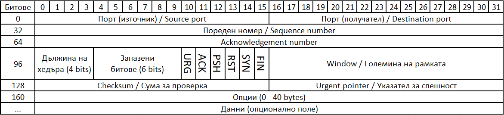
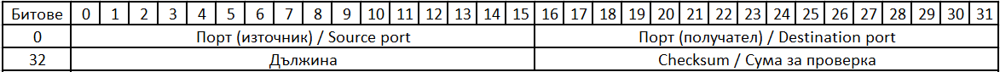

Служебни данни
Служебни данни при TCP комуникация

Фиг. 1 Разпределение на байтовете в един пакет при TCP.
- Source port – номер на порта на предаващата страна - 16 битово число.
- Destination port – номер на порта на приемащата страна - 16 битово число.
- Sequence Number – пореден номер на всеки пакет, започва като случайно число в интервала [0, 4 294 967 295]. Всеки следващ пакет инкрементира този номер с единица - 32 битово число
- Acknowledgement Number – Номер на приетия пакет, използван за даване на информация, че пакекът е приет – 32 битово число
- Head – Посочва от кой байт започват същинските данни - стойността в винаги в граници [20 bytes, 60 bytes]
Забележка:
Първите 5 реда заемат 20 bytes (5 * 32 bits). Те са задължителни, поради това същинските данни започват най-малко след 20-тия byte. След тях за опциите, които не са задължителни. Те могат да достигнат 40 bytes, с което ще преместят данните след 60-тия byte.
Header полето е 4 bit-ово, което означава, че е може да държи числа в интервал [0, 15]. За да се определи дължината на служебните данни (включително опциите) това число се умножава по 4 bytes.
- Reserved – не се използват.
- URG – при =1 показва, че данните са спешни за обработка, спешните данни се обработват на друг канал.
- ACK – при =1 показва, че Acknowledgement номерът в TCP хедъра е валиден. =0 само при установяване на връзка hadnshake.
- PSH – при =1 използва се за да се изпрати целия буфер към получателя. Не е желателно да се използва, защото нарушава работата на процесора на получателя.
- RST – при =1 сигнализира на получателя веднага да се прекъсне връзката. И двете страни прекъсват връзките си, и освобождават ресурси. Може да се загубят данни, които са останали в транзит. Използва се при фатални грешки или връзката не може да бъде терминирана по нормален начин.
- SYN – използва се за синхронизация на sequence number, при =1 се сигнализира, че изпратения sequence number е началния (това става по врем на handshaek)
- FIN – при =1 сигнализира, желание да се прекрати връзката.
- Window size – Поличателят отговаря със свободното пространство на буферът си. Използва се за да се намали скоростта на изпращане на данни.
- Checksum – използва се за верификация на данните, получателят може да провери дали данните не са променени по врем на транзит.
Служебни данни при UDP комуникация

Фиг. 2 Разпределение на байтовете UDP.
- Дължина – Показва теоретичната дължина на съобщението 8 байта служебни данни и 65 527 байта масимални данни.